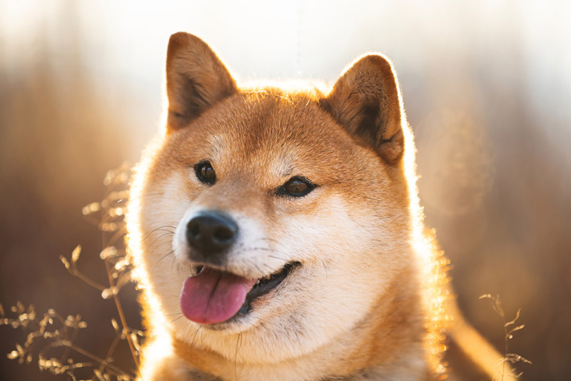

Pet Channel
| ชิบะ อินุ (Shiba Inu) |
|  |
ลักษณะทั่วไป ชิบะอินุเป็นสุนัขพันธุ์ดั้งเดิมของญี่ปุ่นที่มีขนาดเล็กที่สุด เป็นสุนัขในตระกูลเดียวกันกับพันธุ์อะคิตะ (Akita) รูปร่างกระทัดรัด หูตั้ง กล้ามเนื้อกระชับ ขนสั้น 2 ชั้น มีทั้งสีดำผสมสีน้ำตาล สีแดง หรือ สีงาแดง ดวงตาสดใสและรูปริมฝีปากโค้งเหมือนกับกำลังยิ้ม ชิบะอินุ เป็นสุนัขอารมณ์ดี เป็นมิตร ตื่นตัว ฉลาดหลักแหลม มีอายุเฉลี่ยประมาณ 12-15 ปี แต่มีสายพันธุ์ ชิบะ ปูสุเกะ (Shiba Pusuke) ซึ่งได้รับการออกกำลังอย่างเป็นกระจำจนร่างกายแข็งแรง สามารถอยู่ได้ยืนยาวถึง 26 ปี |